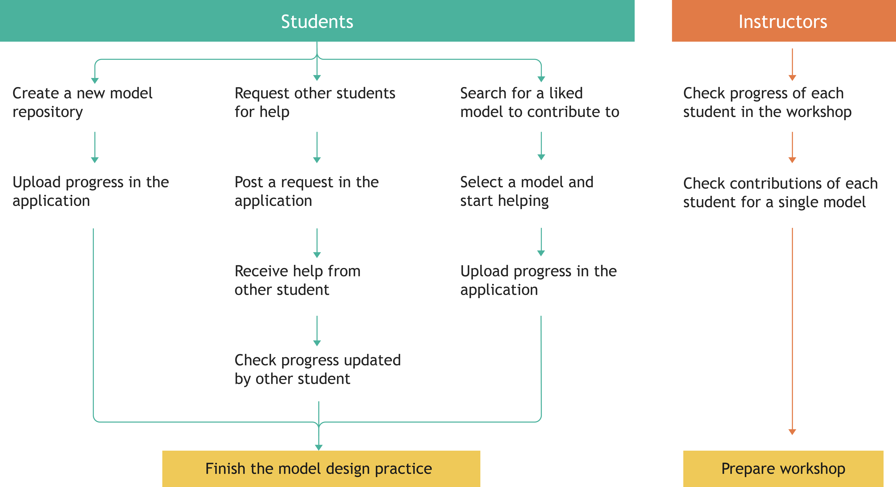
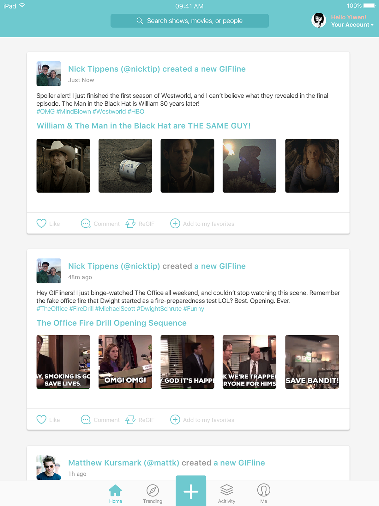
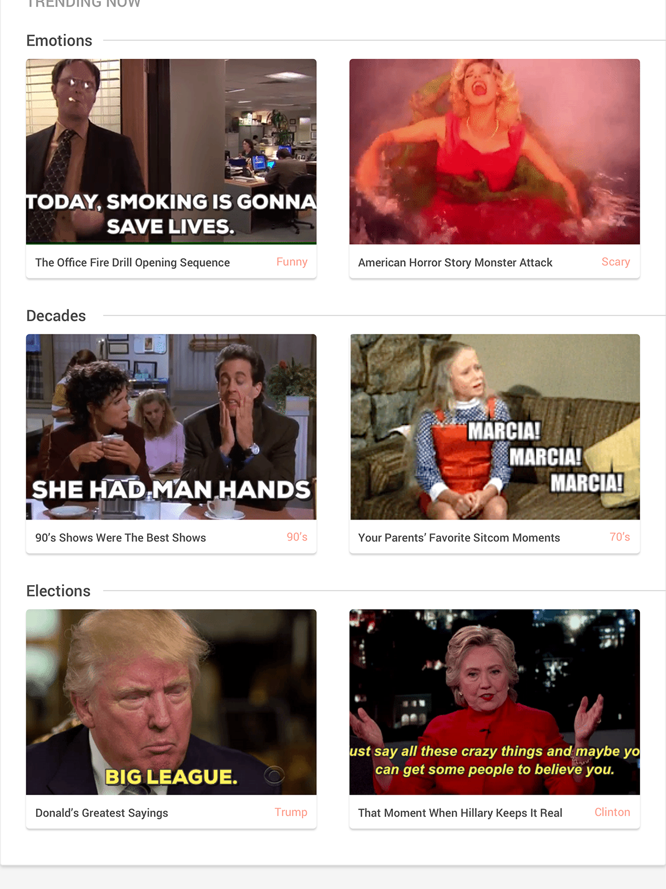
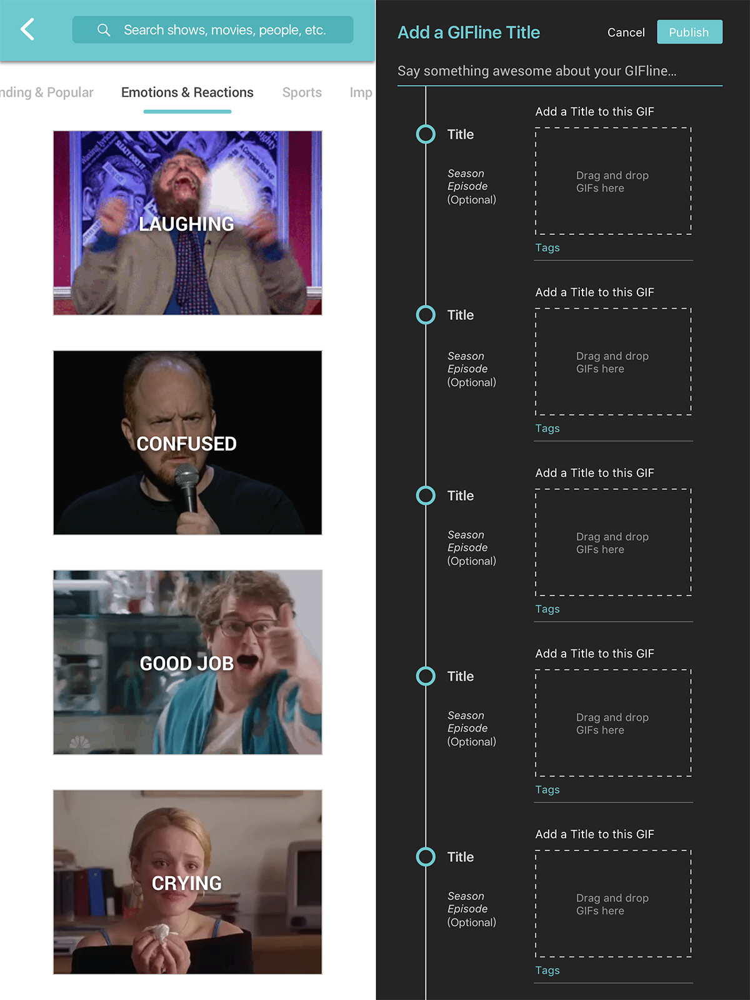

Problem
To develop skills in reflective design, I participated a workshop that teaches making concrete models in the Architecture College. During the practice, I found some problems in the process of building a concrete model.
Ellie
Ellie is a Master Student in the Architecture College. She is taking a concrete model workshop this semester. She is good at spatial design and shape design. She wants to learn more about meterials in the workshop.

Ellie is eager to learn features of concrete as a kind of building material. She participates in the workshop every time. But steps of making a conrete model is repeated and time-consuming. For example, after she applied one layer of glue to the surface of the model, she had to wait for two days before she can apply another layer. And the step needs to be repeated for three times. She hopes she can practice more steps of making a model in one class. Then she has opportunities to explore multiple compositions of shapes and materials, rather than has to go to the workshop several times for just one model.
Andy
Andy is a Master Student in the Liberal Arts College. He is interested in craft and participates the model workshop in his spare times. But he doesn’t have enough time to go there for every class.

Andy loves to spend his spare time creating his own concrete models in the workshop. But he doesn’t have enough time to participate every class because he has a lot of college work to finish. However, if he missed more than one class in the middle, he would have to abandon his model because the material would be too dry to continue the next step. He hopes he could find someone to help him apply some of the steps when he cannot show up in the workshop. He is also willing to offer help to other people when he could attend the workshop, so he could be involoved in more creations of models.
Jeff
Jeff is one of the teachers in the concrete model workshop. He loves students with diverse backgrounds joining the workshop, eveen if they cannot participate the whole process.

Jeff enjoys meeting students from multiple backgrounds, and he hopes all of them could learn what they want from the workshop. However, he has difficluties in tracking the progress of each student. Because some of them missed one or more classes in the middle, resulting in most studnets are at different steps among the whold process. Thus, he has trouble preparing appropriate amount of materials for students, and he wants to organize classes better.
Design Directon
Gather Requirements
Drew lessons from the process I participated, I found the largest issuse of concrete model practice is the long time span it qrequires, which mainly raises four issues: time efficiency, space efficiency, and organization difficulty. To solve the problem, the product should follow these design guidelines:
- It should serve as a medium by which students in the workshop can conveniently reach others who are willing to help them do some steps of making a model.
- It should be a platform of sharing working information in the process of making a model so that students can easily find models that they want to contribute to.
- Staff can learn working progress of each student so that they can organize classes better and prepare appropriate amount of materials for each student.
User Journey

Solutions
Challenge #1 How do students learn about models requiring assistant?
In Co-Model, users are able to post their requests for help in the platform by simply tapping the button “Request”. Then other students can see an alert mark beside the name of the model and know that this model needs help for a next step.
Challenge #2 How can we tell which students are contributing to the model?
Users need to update their work after completing each steps. The application will record and display who updated this step with an account name and signup. Students can also update image of their works. Users are able to contact people who contributed to their models in order to assure quality of other people’s contributions.
Challenge #3 How can students share working process information?
I used a process bar to display working process of each model. On the process bar, steps completed presents a checkmark with highlighted green color, steps in process show light green color, and steps uncompleted show grey color. Users can use a filter to find out models that are requesting for help.
Prototype
Applying the above guidelines, I came up with a mobile application called “CoModel”, to solve problems of the three kinds of users. And my idea of the management process was inspired by GitHub's management features.
Feature 1 - Real-time Updating Post
Present all model repositories that are updating working steps in the workshop. A process bar below the model's name displays which step the model is at. Users can tap buttons “Ready” and “Requested” to filter out models according to their needs.

Home

Trending

GIFs Library
Feature 2 - Collaboration Details
Display concrete model repositories of a student's account, including models the student created, models the student contributed to, and models the student liked.
Home
Trending
GIFs Library
Feature 3 - Working Flow
Users first create a model project page, then they can edit this page by updating working steps and they can request for helps here. Other users can only view the page. But if the model is requesting for help, other users would be able to tap “contribute” and then they can update steps.
Home
Trending
GIFs Library